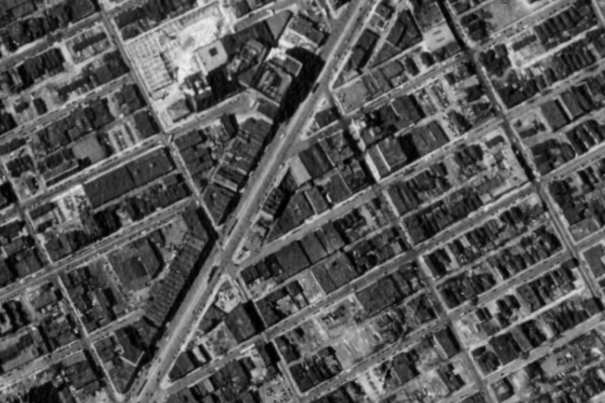
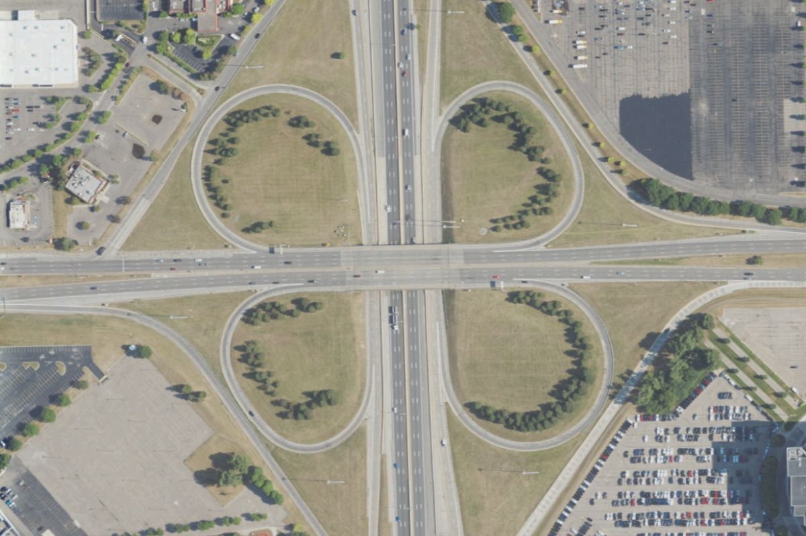
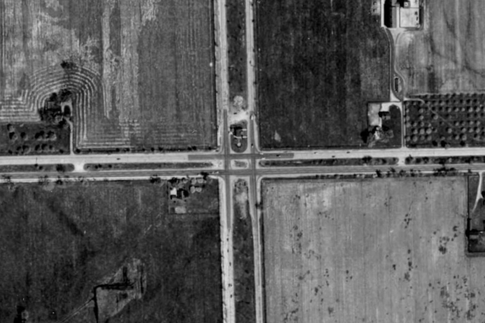

Aerial photographs of Detroit from 1949, 1956, 1961 and 1967, laid over the modern city. Drag a divider across the map and watch neighborhoods, freeways and farmland change underneath it.
Try it here

19491961Hastings Street, downtown. In 1949 this is Black Bottom, one of the city's densest neighborhoods, with Gratiot Avenue running through it. By 1961 most of these blocks are gone, cleared for urban renewal and the Chrysler Freeway.


19492022Ford Road at the Southfield Freeway. A crossroads between fields in 1949; the north–south road is where the freeway will go. Today it is a cloverleaf. In the survey you can do this anywhere across West Detroit and downtown, between any two years.
What's in it
About 230 aerial negatives from the DTE Aerial Photo Collection at Wayne State University, joined into one continuous picture per year.
The City of Detroit's orthophotos, USDA aerial imagery every two years, and today's view from Esri's World Imagery.
Buildings and streets that came and went, each dated. Click any spot on the map to see it in every year at once.
A separate scene of the core and the riverfront, from Black Bottom to Campus Martius.
How it was made
The photographs were never meant to line up with anything. Each negative is a separate picture from a plane flying north–south lines over the city, and the only record of where each one was taken is a catalog position that can be hundreds of meters out.
Every negative, at full scan resolution, from Wayne State's digital collection.
COLMAP, a photogrammetry tool, ties each year's negatives together through thousands of matched features and works out every camera.
One smooth correction per year against modern imagery, chosen only if it holds up on ground it was never fitted to.
Every layer is checked against every other layer, and the checking tool is itself tested with a known, planted error first.
How close
The typical distance between a street in the old photograph and the same street in modern imagery that was never used to place it, measured across the whole area. On a residential street that's about the width of a front yard. 1956's western and northern edges were farmland that is suburbs now, and can't be checked the same way.
Questions
The 1949–1967 film is from the DTE Aerial Photo Collection at Wayne State University. The modern layers are the City of Detroit's orthophotos, USDA's National Agriculture Imagery Program, and Esri's World Imagery for today.
You can open it, but it's built for a bigger screen: the controls along the top want a laptop or desktop. A tablet in landscape works.
Tall buildings lean in aerial photographs, and differently in every photograph depending on where the plane was. The ground lines up to a few meters; the rooftops can't. Follow the streets, not the roofs.
Every layer is placed independently, the modern ones by their own publishers, so two years can disagree by a few meters. Between the film years it's typically 4–6 m. The survey's source code includes the measurements behind every figure on this page.
The historical photographs belong to the DTE Aerial Photo Collection; ask Wayne State University Libraries about reuse. The code that places them on the map is on GitHub.
Historical photographs: DTE Aerial Photo Collection, Wayne State University. 2022 imagery on this page: USDA NAIP.